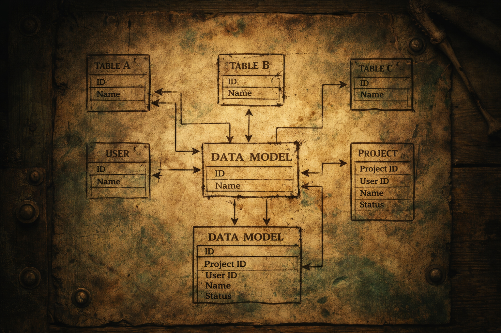
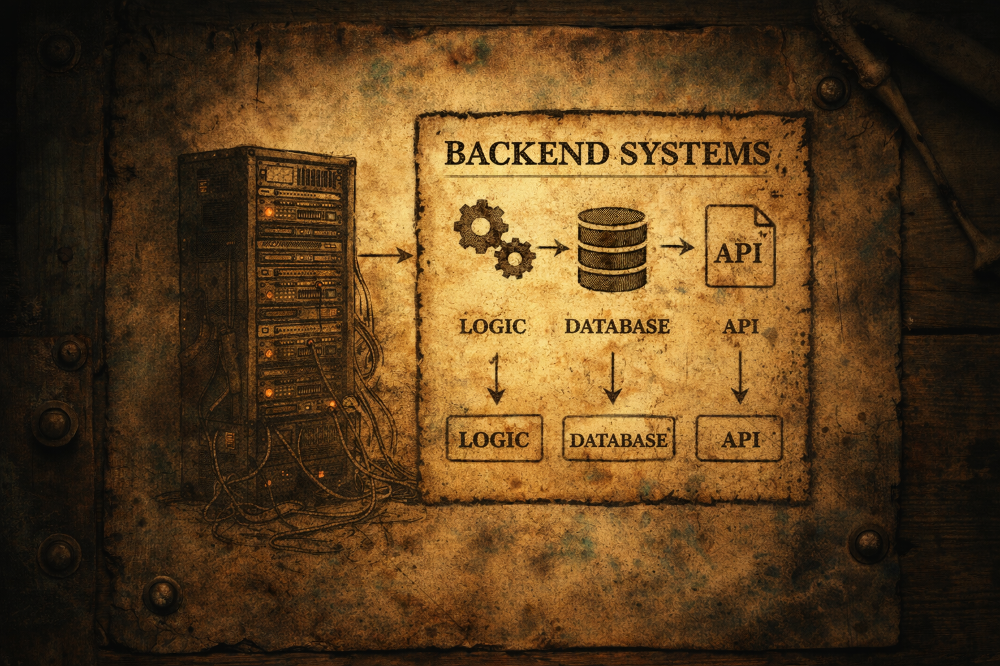
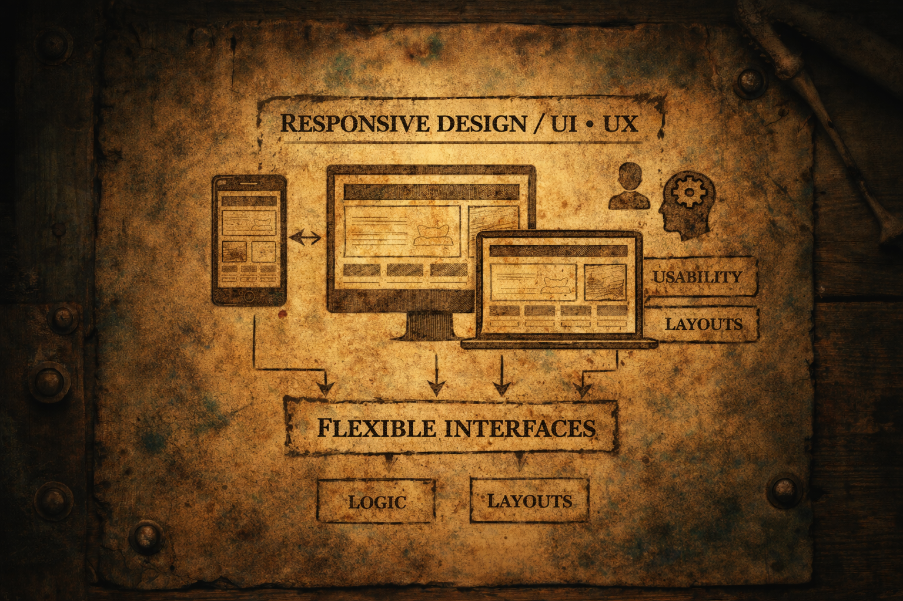
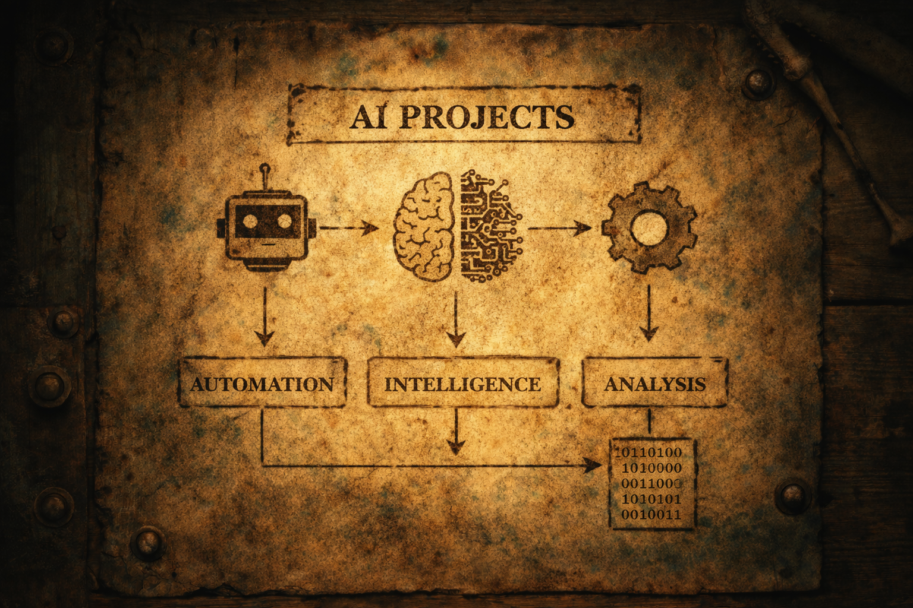

WANTED
Data Modeling

Structured Systems & Architecture
I have experience designing structured and scalable data models, defining relationships, and creating maintainable database architectures for reliable software systems.
WANTED

Structured Systems & Architecture
I have experience designing structured and scalable data models, defining relationships, and creating maintainable database architectures for reliable software systems.
WANTED

Logic, APIs & Databases
I build backend systems that handle business logic, API structures, and database communication with a focus on clean, maintainable, and scalable architecture.
WANTED

User Experience & Modern Interfaces
I create responsive interfaces that adapt across devices while focusing on clarity, usability, and modern visual design to deliver intuitive digital experiences.
WANTED

Automation & Intelligent Applications
I am especially interested in AI-driven software and projects that use intelligent systems to automate tasks, analyze information, and create practical user-centered solutions.